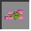
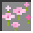
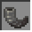

Mushroom Golem
Lumberjack
The Mushroom Golem is the lumberjack. It fells the natural trees around its chest, log by log, and plants saplings so the grove keeps growing.
Building a Mushroom Golem
Place the golem's body block, then put a carved pumpkin or jack o'lantern on top. The pumpkin is consumed, the body block becomes the golem's chest, and the golem stands on it. You do not need a chest first: the pattern makes one. The golem is bound to that chest and starts dormant.
The chest is also craftable, so you can move or replace it:


 →shapeless, no double chests
→shapeless, no double chestsWaking it up
A golem starts dormant: head hanging, standing still, holding out the thing it wants in its off hand. Right-click it with that item to give it an offering. Each offering is worth 45 minutes of work and it stores at most two (90 minutes). It then asks for something different, so no single item will do. The clock runs only while the golem is loaded and has a job site.
These are the items it can ask for. They are deliberately unrelated to its job, so keeping a large operation going means going out exploring.
 Amethyst Shardgeodes
Amethyst Shardgeodes Resin Clumppale gardens
Resin Clumppale gardens
Spore Blossomlush caves
Pink Petalscherry groves
Goat Horngoats Armadillo Scutearmadillos
Armadillo Scutearmadillos Honey Bottlebee nests
Honey Bottlebee nests Open Eyeblossompale gardens
Open Eyeblossompale gardens
What it does
- It looks for trees within 16 blocks of its chest and fells them log by log, including branches and extra trunks. Logs, sticks, apples and saplings are carried to the chest.
- It ignores logs you have built with (and stripped logs), so your house is safe.
- It replants within 14 blocks of the chest, keeping saplings at least 5 blocks apart so trees have room, and leaves a 6-block clearing around the chest so the chest never gets walled in.
- It only plants saplings it has been given or has collected: it never conjures them. A lone dark oak sapling is left alone, because it cannot grow without room for four.
- If the chest is full it sits down with the stack it is holding, and gets up again once there is room.
Like every golem it carries one stack at a time: it has no inventory, picks things up in its hand, takes them to its chest and goes back for the next. Supplies come out of the chest the same way.
It produces

It uses
 SaplingSaplings, a few at a time
SaplingSaplings, a few at a time
Notes
- To start a grove, put a handful of saplings in the chest. The golem tops up its supply from there.
- The chest has 27 slots and never joins into a double chest. A golem prefers its own chest to any other nearby.